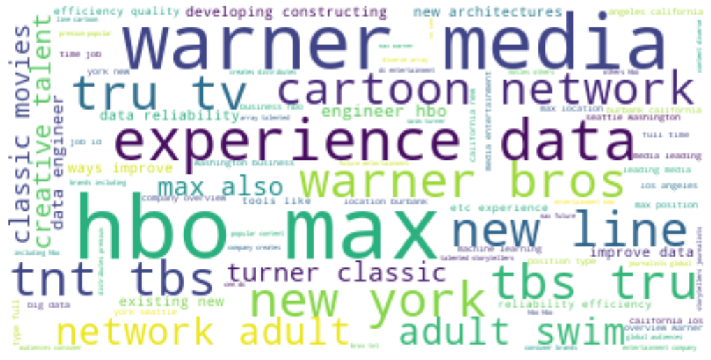
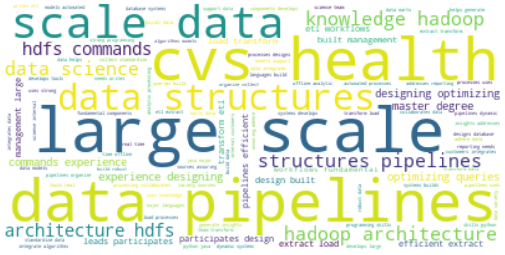

New York
Cluster: 0
Jobs: 49
Titles:
machine learning engineer
data engineer

These engineer positions tend to involve multimedia and video streaming
Cluster: 1
Jobs: 48
Titles
data engineer

These data engineer positions emphasize data warehouseing and data architecture
Cluster: 2
Jobs: 210
Titles
data scientist
quantitative analyst
statistician
data analyst
research scientist
machine learning engineer
data engineer

This cluster represents general data science postitions focusing on modeling and experience
Cluster: 3
Jobs: 48
Titles
data engineer

Most of these jobs involve large scale data structures and data pipelines
Cluster: 4
Jobs: 33
Titles:
data engineer

These data engineer positions place heavy emphasis on big query and years experience
Cluster: 5
Jobs: 48
Titles
data engineer

These data engineer positions most likely involve working with commercial real estate.
Cluster: 6
Jobs: 7
Titles:
data scientist
research scientist

Research and product management are important.
Cluster: 7
Jobs: 48
Titles:
data engineer

These data engineer jobs rely heavily on data modeling and data pipelines
Cluster: 8
Jobs: 33
Titles:
data engineer

This cluster of jobs place emphasis on research moist likely involving the health industry
These data engineer jobs look for experience in data intergration and systems design
New Jersey
Below is the WordCloud for NJ Jobs:

Clearly, there is an emphasis on "experience", working in a "team", and performing "statistical" "analysis".